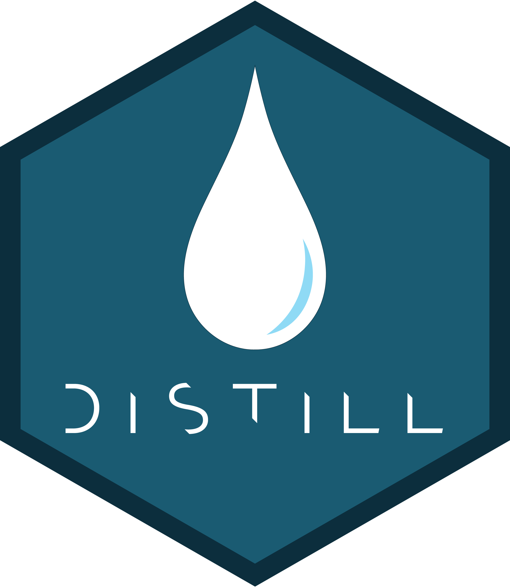

GNN Publication
GNN 관련 내용을 공부하면서 찾게 된 좋은 간행물이나 논문 등을 번역 및 정리해서 올리려고 합니다. 그 첫 번째 순서로 지난 2021년 9월 2일 Distill에서 발행된 < A Gentle Introduction to Graph Neural Networks >입니다. 당시 Google Research 소속의 다섯 연구원이 작성한 글인데요, GNN 입문자에게 적당한 설명이 있는 것 같아 정리해 보았습니다.
잠깐! Distill

Distill은 2016년부터 2021년까지 운영된 머신러닝 관련 과학 저널입니다. Explanation, Interactive Articles, Visualization 등 기존의 과학 저널에서 표현하지 않던 스토리텔링을 담아 새로운 과학 출판물을 제작했죠. 저널이니만큼 투고도 가능했지만 그러려면 Distill Template에 맞춰서 제작해야 했습니다.
전통적인 과학 저작물을 넘어선, 새로운 과학 저널을 꿈꾸었던 Distill의 시도는 성공으로 이어지진 못했습니다. 기존 저널에서도 큰 반향을 일으키진 못했고, 논문을 작성하는 사람들이 Interactive 요소를 담아서 Distill의 Template을 맞추기도 어려웠죠. 결국 2021년 이후 Distill은 무기한 중단 중입니다.

그렇다고 Distill이 사라진 건 아닙니다. R에서 이 Distill Template을 참조해 과학 및 기술 커뮤니케이션 용 Markdown을 만들었거든요. 이름하여 Distill for R Markdown, Distill package였죠. 과학, 기술 블로그를 만드는 데 도움을 준 Distill package는 지금은 Quarto의 Blog, Website Format으로 흡수되어 있습니다. 더 많은 사람들에게 과학 아티클을 이해하기 쉽게 표현하려 했던 Distill의 노력은 지금 이 Quarto 블로그에 남아있는 거죠.
헤어졌던 Distill을 다시 만나게 되어 이상한 기분이 들었는지 서두가 길었습니다. 본격적으로 < A Gentle Introduction to Graph Neural Networks >를 정리해 보겠습니다. Distill의 원 게시글은 D3를 활용한 Interacitve 요소가 풍부하게 담겨있으니 꼭 한번 살펴보세요.
Getting started
그래프는 우리 주변에서 흔히 볼 수 있습니다. 현실에 있는 사물은 다른 사물과의 연결로 정의되는 경우가 많죠. 일련의 사물들과 사물들 간의 연결은 자연스럽게 그래프로 표현됩니다. 그래프 연구자들은 GNN(Graph neural networks, 그래프 신경망)을 10년 이상 개발해 왔습니다. 최근엔 기술 발전으로 그 기능과 표현력이 더욱 향상되었죠. GNN은 항균 물질의 발견, 물리학 시뮬레이션, 가짜 뉴스 탐지, 교통 예측 및 추천 시스템 등… 다양한 분야에서 적용되고 있습니다. 이 글에서는 최신1 그래프 신경망에 대해 살펴보고 설명하려고 합니다 이 글은 크게 네 파트로 나뉩니다.
1.첫 번째 파트에서는 어떤 종류의 데이터가 가장 자연스럽게 그래프로 표현되는지, 일반적인 예시와 함께 살펴봅니다.
2.두 번째 파트에서는 그래프가 다른 유형의 데이터와는 어떻게 다른지, 그래프를 사용할 때 고려해야 하는 지점에 대해 살펴봅니다.
3.세 번째 파트에서는 그래프 분야의 역사적인 모델링 혁신부터 시작해 모델의 각 부분을 살펴보면서 최신 GNN 모델을 설계해 보겠습니다.
4.네 번째 파트에서는 실제 작업과 데이터 세트를 적용하면서 GNN 모델의 각 요소가 예측에 어떻게 기여하는지 살펴봅니다.
먼저 그래프가 무엇인지부터 알아봅시다. 그래프는 엔티티(Nodes)들의 관계(Edges)를 나타냅니다. 그래프에는 세 타입의 속성이 존재합니다.
V : Vertex(or Node) attributes, 정점 혹은 Node 속성
E : Edge(or Link) attributes and directions, Edge 혹은 Link 속성
U : Global (or Master node) attributes, 전역 혹은 Master Node 속성
각각의 Node, Edge, 전체 그래프를 더 자세히 설명하기 위해 정보를 저장할 수도 있습니다. 또 Edge에 방향을 추가할 수도 있습니다. 그래프는 매우 우연한 데이터 구조입니다. 아직까지는 그래프가 약간은 추상적으로 느껴질 수 있지만 다음 섹션부터는 예시를 통해 구체적으로 설명해 보겠습니다.
Part 1. Graphs and where to find them
그래프의 형태라고 하면 아마도 SNS의 소셜 네트워크를 떠올리는 분이 계실지 모릅니다. 하지만 그래프는 매우 강력하고 일반적인 데이터 표현입니다. 지금부터는 그래프로 모델링할 수 없다고 생각하기 쉬운 이미지 데이터와 텍스트 데이터를 가지고 이야기해 보겠습니다. 이미지와 텍스트를 그래프 구조로 보면 이미지와 텍스트의 대칭성과 구조에 대해 더 많이 배울 수 있습니다. 또 나중에 설명할 다른 그래프 데이터를 이해하는 데에도 도움이 될 수 있어요.
Image as graphs
일반적으로 우리는 이미지 데이터를 처리할 때 이미지 채널2이 있는 직사각형 격자로 생각합니다. 그리고 244 X 244 X 3과 같이 배열(array)로 표현하죠. 이미지 데이터를 표현하는 다른 방법은 각각의 픽셀을 Node로 생각하고 인접한 픽셀 사이를 Edge로 연결하는 겁니다. 바로 그래프 구조죠. 이를테면 가장자리에 위치하지 않은 픽셀은 8개의 이웃 픽셀을 가질 겁니다. 그리고 픽셀의 RGB 값을 나타내는 3차원 vector는 각각의 Node에 저장될 거고요.
그래프의 연결을 시각화할 수 있는 방법 중 하나는 인접 행렬을 이용하는 것입니다. 아래 예에서는 웃는 얼굴의 픽셀 이미지(5X5)를 가지고 인접 행렬을 만들어봤습니다. 각각 25픽셀씩 Node를 정렬(0-0부터 4-4까지)하고, 두 Node가 연결되어 있는 경우 인접 행렬의 칸을 채웠습니다. 아래의 세 표현 방식은 모두 동일한 이미지를 표현한 방식입니다.
Text as graphs
텍스트 데이터에서는 각각의 단어, 문자, 토큰3을 Node 삼아 연결해서 그래프화할 수 있습니다. 각각의 문자가 Node가 되고 Edge를 통해 그다음 Node로 연결되는 아주 간단한 방향성 그래프를 만들 수 있죠.
참고로 이렇게 문자 토큰의 시퀀스로 표현하는 방법은 RNN에서 텍스트를 포현하는 방법입니다. 트랜스포머와 같은 다른 모델에서는 텍스트를 완전히 연결된 그래프로 보고 토큰간의 관계를 학습합니다.
물론 위에서 이야기한 방식이 실제로 텍스트와 이미지가 인코딩 되는 방식은 아닙니다. 모든 이미지와 텍스트 데이터들은 매우 규칙적인 구조를 갖기 때문에 위와 같은 그래프 표현은 불필요할 수 있습니다. 이를테면 이미지는 모든 픽셀들이 서로 이웃해 연결되어 있기 때문에 인접 행렬로 표현하면 띠 모양의 구조를 갖게 됩니다. 텍스트 데이터는 일방향성이기 때문에 인접 행렬로 표현하면 대각선으로만 나오죠.
Graph-valued data in the wild
그래프는 익숙한 데이터를 설명하는 데 참으로 유용한 도구입니다. 지금부터는 조금 더 이질적인 구조를 가진 데이터로 넘어가 보겠습니다. 이제부터 나올 데이터들은 이미지와 텍스트처럼 이웃의 개수가 고정되어있지 않고 각 Node별로 이웃 수가 가변적입니다. 이런 데이터들은 그래프 말고 다른 방식으로 표현하기가 어렵습니다.
- 그래프로 보는 분자
분자는 원자와 전자로 이루어져 있는 물질의 구성 요소입니다. 모든 입자는 상호작용하지만 한 쌍의 원자가 서로 안정된 거리에 붙어 있으면 우리는 공유 결합을 형성하고 있다고 말합니다. 공유결합은 두 원자 사이에 공유하는 전자 쌍의 개수에 따라 서로 다른 거리를 갖습니다. 이를테면 단일결합은 한 쌍, 이중결합은 두 쌍, 삼중결합은 세 쌍의 전자를 공유하죠. 결합의 수가 늘어날수록 결합 사이의 거리는 짧아지고 그 세기는 증가합니다. 3D로 표현된 분자 개체를 그래프로 설명하는 건 매우 편리합니다. 분자 그래프에서 Node는 원자이고 Edge는 결합을 나타냅니다. 위에는 매우 일반적인 분자4를 가지고 그래프로 표현한 자료가 있습니다.
- 그래프로 보는 소셜 네트워크
소셜 네트워크는 사람과 기관, 그리고 조직의 집단행동 패턴을 연구하는 도구입니다. 개인을 Node로, 관계를 Edge로 모델링하면 사람들의 그룹을 나타내는 그래프를 만들 수 있습니다. 위의 이미지는 연극 오델로의 캐릭터 간 상호작용을 인접 행렬과 그래프로 표현한 겁니다.
- 그래프로 보는 인용 네트워크
과학자들은 논문을 발표할 때 다른 과학자의 연구를 일상적으로 인용합니다. 이러한 인용 네트워크 역시 그래프로 시각화할 수 있습니다. 각각의 논문은 Node로 표현하고, Node와 Node를 연결하는 Edge는 한 논문과 다른 논문 사이의 인용을 나타낼 수 있죠. 또한 각 Node에 초록의 단어를 임베딩하는 등 각 논문에 대한 정보를 추가할 수도 있습니다.
- 그 외
컴퓨터 비전(CV, Computer Vision)에서는 시각적 장면에 포함된 객체에 태그를 지정하고 싶을 때가 있습니다. 이런 경우에는 객체를 Node로, 객체 간의 관계를 Edge로 처리해서 그래프를 만들 수 있습니다. 머신러닝 모델, 프로그래밍 코드, 수식 역시 그래프로 표현 가능합니다. 이 경우엔 변수를 Node로 연산을 Edge로 보면 되죠. Tensorflow 등에서 등장하는 Dataflow graph(데이터 흐름도)가 바로 그 예시입니다.
현실 세계에 존재하는 그래프들의 구조는 데이터 유형에 따라 크게 달라질 수 있을 겁니다. 어떤 그래프에선 Node가 많지만 서로 연결이 적을 수도 있고, 또 어떤 그래프에선 Node는 적지만 연결이 엄청나게 많을 수도 있죠. 그래서 그래프 데이터셋은 Node, Edge, Node의 연결성 등의 측면을 고려했을 때 매우 다양한 형태를 가질 수 있습니다.
A Gentle Introduction to GNNs
- 그래프는 세상 어디에나 있다